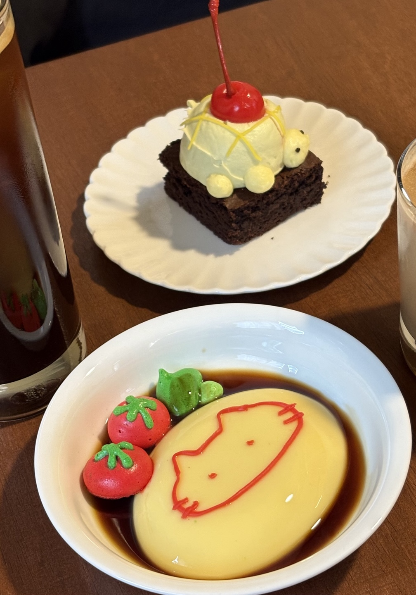

한 채채
[전주주]
위치-전북특별자치도 전주시 완산구 고사동 205번지 KR 1층
보기만 해도 기분 좋아지는 디저트, 한 채
한 채는 전주의 객사에 위치한 독채 카페입니다. 넓진 않지만 한옥으로 아늑한 분위기가 가득합니다.
귀여운 디저트를 많이 판매하고 있습니다. 다만 테이블이 붙어있어 개인적인 대화를 하긴 좀 어렵습니다.
야외에도 테이블이 있고 전체적으로 아기자기하고 귀여운 분위기 입니다.
추천메뉴
- :) -
맛을 고려하고 오는 카페는 아닌 것 같습니다.